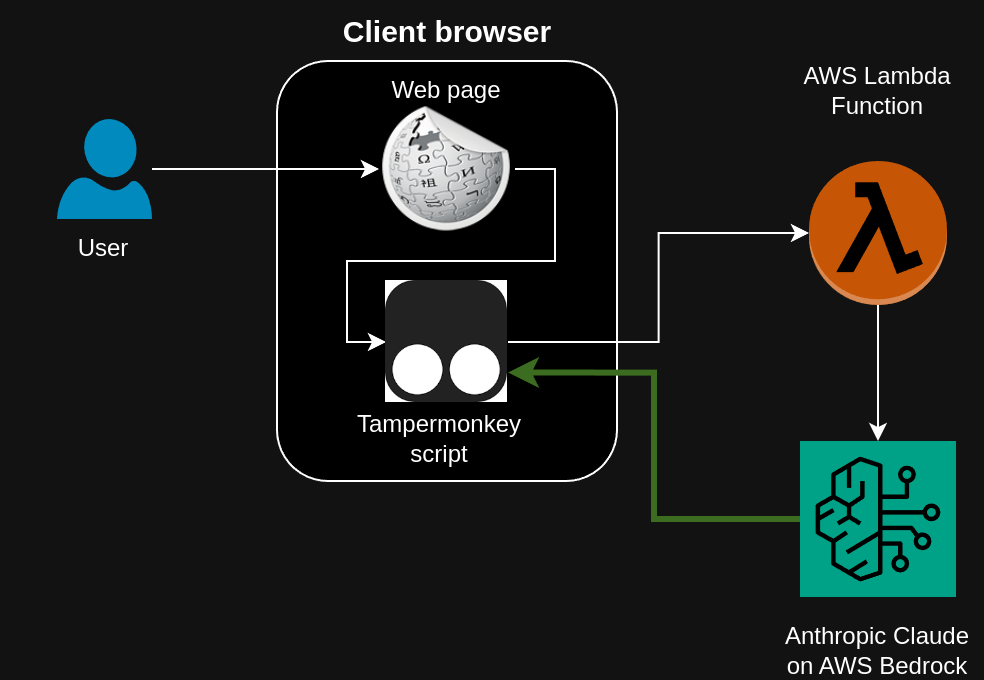

To experiment with Bedrock powered AI tools, I decided to create a web assistant that could answer questions about content in the browser and also take actions in the browser on behalf of a user. The advantage of this web assistant over something like ChatGPT is that the assistant will be integrated with the user's browser to allow the assistant to retrieve current information and context from the browser and even to take actions in the browser on behalf of the user.

The image above outlines the architecture. A Tampermonkey script runs in the browser and can invoke the model powering the assistant as well as provide information and take actions in the browser at the direction of the assistant. An AWS Lambda function is responsible for shuttling message between the Tampermonkey script and the underlying language model. I used Amazon Bedrock to enabled Anthropic's Claude V3 model to serve as the language model of my assistant.
I began by writing a simple Tampermonkey script that creates a simple chat widget for interacting with the assistant. The Tampermonkey script is responsible for invoking the AWS Lambda that will call the Bedrock agent as well as exposing actions in the browser (like scraping the page content) that the Bedrock agent can request based on the user's query.
You can check out the Tampermonkey script here. The script is quite simple and renders a chat widget using raw Javascript and invokes the Lambda function using the AWS Javascript SDK. Tampermonkey script also makes use of a Javascript library that I previously wrote. That library is imported via the following @require line in the Tampermonkey header:
// @require https://nickkantack.github.io/KantackJsCommons/dist/KJSC.js
In order for the Tampermonkey script to be able to call the Lambda function, you'll need to give it permission. One way of doing this is to create a Cognito identity pool with guest access and to use the identity pool ID to make calls to the Lambda.
To use the Cognito identity pool, the Tampermonkey script simply configures the static credentials of the AWS SDK object and these credentials will be used when the SDK is used to invoke the Lambda function.
// @require https://sdk.amazonaws.com/js/aws-sdk-2.7.20.min.js
// @require https://nickkantack.github.io/KantackJsCommons/dist/KJSC.js
// ==/UserScript==
AWS.config.update({region: 'us-east-1'});
AWS.config.credentials = new AWS.CognitoIdentityCredentials({IdentityPoolId: 'us-east-1:f0bb38aa-79ab-4ede-9702-49da272cb847'});
const lambda = new AWS.Lambda({region: 'us-east-1', apiVersion: '2015-03-31'});
Creating an AWS Lambda serves a few purposes. First, it creates a backend that can receive requests from the Tampermonkey script. Second, it provides a system prompt that sets the proper context for the agent and makes the agent aware of actions that it can take in the browser via the Tampermonkey script.
Below is the code for a basic working version of the AWS Lambda (except for a stub) for the get_system_prompt() method which is provided in a code snippet further down.
import boto3
import json
client = boto3.client('bedrock-agent-runtime')
bedrock_runtime = boto3.client(service_name='bedrock-runtime', region_name='us-east-1')
def lambda_handler(event, context):
# Parse the input fields
conversationHistory = event["conversationHistory"]
isOnWikipedia = event["isOnWikipedia"] if "isOnWikipedia" in event else True
new_messages = []
# Pose the user's questions to the Bedrock agent
body = json.dumps({
"max_tokens": 1024,
"anthropic_version": "bedrock-2023-05-31",
"system": get_system_prompt(isOnWikipedia, False),
"messages": conversationHistory,
})
response = bedrock_runtime.invoke_model(
body=body,
modelId='anthropic.claude-3-sonnet-20240229-v1:0',
accept='application/json',
contentType='application/json'
)
response_body = json.loads(response.get('body').read())
response_text = response_body['content'][0]['text']
new_messages.append({"role": "assistant", "content": response_text})
# Loop over all agent responses until it is directed at the user
latest_message_text = new_messages[-1]["content"]
while not latest_message_text.startswith("!Local App:") and not latest_message_text.startswith("!User:"):
# Handle an invalid prefix from the model by letting the model try again
new_messages.append({"role": "user", "content": "Your previous message did not begin with \"!Local App:\", or \"!User:\", and therefore it cannot be processed. Please try again."})
body = json.dumps({
"max_tokens": 1024,
"anthropic_version": "bedrock-2023-05-31",
"messages": conversationHistory + new_messages,
})
response = bedrock_runtime.invoke_model(
body=body,
modelId='anthropic.claude-3-sonnet-20240229-v1:0',
accept='application/json',
contentType='application/json'
)
response_body = json.loads(response.get('body').read())
response_text = response_body['content'][0]['text']
new_messages.append({"role": "assistant", "content": response_text})
latest_message_text = new_messages[-1]["content"]
return {
'statusCode': 200,
'new_messages': new_messages,
}
def get_system_prompt(isOnWikipedia, isGetHtmlAllowed):
...
Once this Lambda function is created, there are a few changes to make in the IAM permissions.
First, the execution role for the Lambda must be given permission to invoke the Bedrock agent of choice. A properly configured IAM policy would look something like this:
{
"Version": "2012-10-17",
"Statement": [
{
"Sid": "InvokeBedrock",
"Effect": "Allow",
"Action": [
"bedrock:InvokeModel"
],
"Resource": [
"arn:aws:bedrock:us-east-1::foundation-model/anthropic.claude-3-sonnet-20240229-v1:0"
]
}
]
}
The Cognito identity pool's IAM role will also need permission to call the newly created Lambda function. A suitable policy will look something like this:
{
"Version": "2012-10-17",
"Statement": [
{
"Sid": "InvokeLambda",
"Effect": "Allow",
"Action": "lambda:InvokeFunction",
"Resource": [
"arn:aws:lambda:us-east-1:012345678901:function:BedrockWebAssistant"
]
}
]
}
I wrote a system prompt that establishes the context for the model and lays out an API that the agent can use to request information from the Tampermonkey script or to request actions be taken in the browser by the Tampermonkey script.
Below is a pastable python method that can be added to the AWS Lambda code which applies the dynamic system prompt.
def get_system_prompt(isOnWikipedia, isGetHtmlAllowed):
return f"""
You are a language model powered assistant that is embedded as a chat widget in a user's browser. The user can ask for information or for help performing actions in the browser. Your responsibility is to be as helpful as possible in accomplishing the goal of the user.
You will be provided a prompt that is from the user (or from another tool) and your job is to create the most useful response you can. Your response may be the answer to a question, a suggestion as part of a dialog, or a command to be executed on a local application (this will be explained later). Because you will be able to give responses that elicit additional information from several resources, it is important that your final response to the user be clearly indicated by beginning with the prefix "!User: ". This allows the user to know that the response that was received is the final product of your work and not an intermediate request used to build the desired response.
Aside from sending messages to the user, you can also make requests of an application that is running on the user's computer. This is referred to as the local application or "Local App" and is a browser extension that is capable of querying internal company resources and development tools. Requests to the Local App should be carefully formatted using the following syntax. Action,Detail1,Detail2,... etc. Therefore, your request is always a comma-delimited sequence that has at least one member (the Action) and a variable number of follow-on arguments depending on the action taken. If you are going to make a request of the Local App, let your response be of the following format: "!Local App:Action,Detail1,Detail2". Expect that the response you get from the Local App will be formatted as plain text and contain the answer. Here is a list of all the actions you can take:
{"You can use the action getHtml. This action obtains the html for a url of an internal website. This should be followed by only one detail argument, the url to scrape. For example, \"getHtml,https://google.com\" is a valid version of this command." if isGetHtmlAllowed else ""}
{"You can use the action getWikipediaText. This command returns all of the text within a wikipedia article that is currently loaded in the user's browser. This command does not take any details, so the only valid syntax for this command is \"getWikipediaText\"." if isOnWikipedia else ""}
Responses from the Local App will appear to come from the user, but the user is not aware of them. Therefore, do not assume a message immediately after your call to Local App is from the developer; it is not, and the user does not know what the Local App said. Therefore, if the information from the Local App was requested by the user, you will need to send a message to the user with the "!User:" prefix in order to relay the information back to the user.
The final step is never to call the Local App, even if the user asks you to take an action on their behalf. Always follow up a response from a Local App call with something else, and plan to send a message beginning with "!User:" as soon as you have the necessary information to answer the user's question or satisfy their request.
When you need to call the Local App or respond to the user, do so as individual responses; do not attempt to call the Local App and respond to the user in the same message. If you need to consult multiple sources, always choose a single source to consult in your response (i.e. you can assume that after getting a response from one source you will have the opportunity to consult other sources). Therefore, each response from you should either begin with !Local App:", or "!User:". Do not preface any of these prefixes with any explanations or other text. These two options (!Local App:", and "!User:") are the only permissible starts to any of your responses, and there should only be one of these prefixes per response.
{'The user is currently on a wikipedia page' if isOnWikipedia else ''}"""
This project illustrates how a relatively simple architecture can allow for some very dynamic application of AI powered tools. While the example of answering questions about an open web page is pretty simple and perhaps underwhelming, it helps illustrate how a language model can interact with the browser to better fulfill user requests.